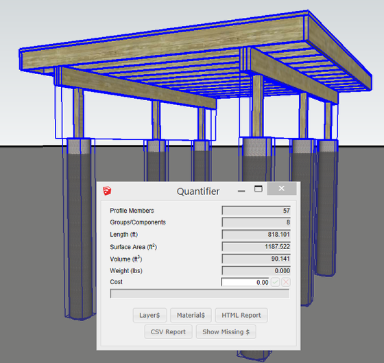

Select Profile Members or other Objects in your model

Select Profile Members, Components, or Groups and the Quantifier dialog will instantly report the quantities of the selection.
Tips for using the Quantifier
An 'Object' below refers to a Profile Member, Group, or Component.
Model objects using Profile Members as much as possible to get the most accurate quantity reports.
Avoid using the SketchUp scale tool on an Object. Rather, first double-click to enter Component edit mode and then scale the faces and edges inside the Object.
Avoid using the SketchUp push / pull tool to modify the length of a Profile Member. Rather, use the Path Edit tool or the Extend tool.
Put Objects with different physical properties on different Layers. For example, put objects made out of Concrete on a 'Concrete' layer and put objects made out of 'Wood' on a 'Wood' layer, and so on. This will result in accurate weight and cost estimates as long as the layer quantity properties have been set correctly.